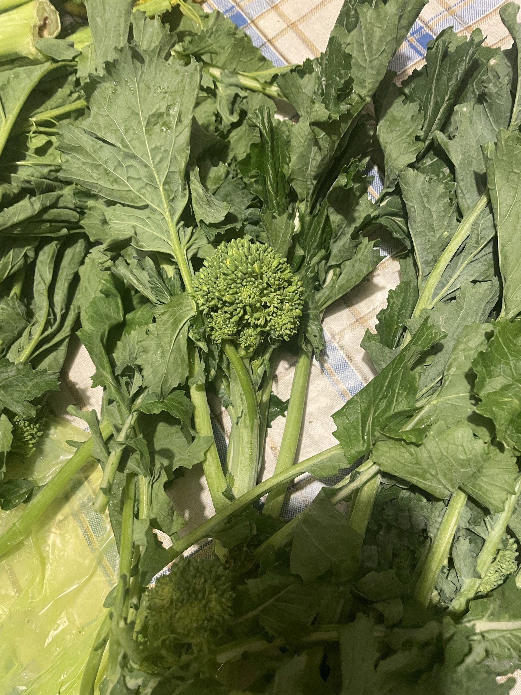

Orecchiette e cime di rapa
Ingredients
4×
- 1 kg di cime di rapa
- acqua salata
- 400 g di orecchiette
- 2 spicchi d'aglio
- olio d'oliva
- peperoncino
- pepe nero

Preparazione
Passo 1
Pulire 1 kg di cime di rapa: tenere le cimette, le foglie tenere e i gambi più sottili.
Passo 2
Lessare le cime di rapa in abbondante acqua salata per 5min, poi aggiungere 400 g di orecchiette e cuocere insieme fino a quando la pasta è al dente.
Passo 3
Nel frattempo soffriggere 2 spicchi d'aglio in olio d'oliva abbondante, con un peperoncino (facoltativo).
Passo 4
Scolare pasta e verdura e saltarle in padella con l’olio all’aglio. Servire con pepe nero.

